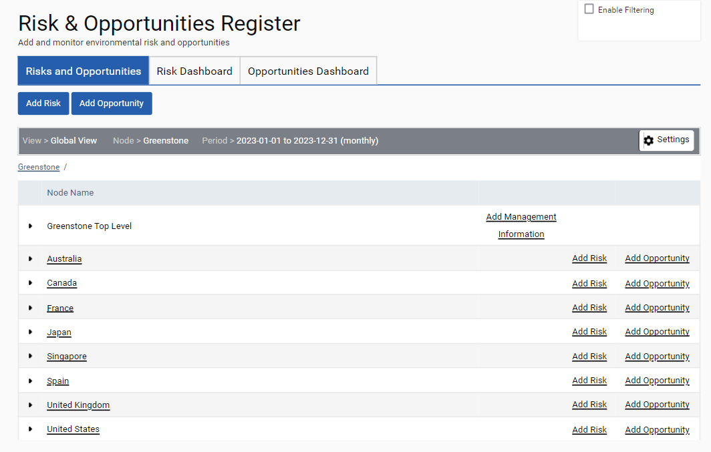
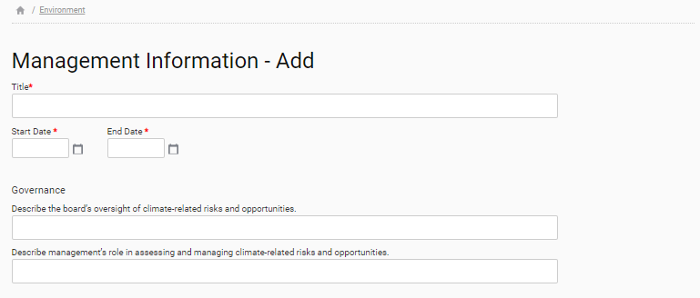

Risks and Opportunities functionality can be access from ‘Management > Risks and Opportunities’ and allow user to be able to complete three types of forms:
Add Management Information – this has a fixed set of company level questions that can be completed to capture information on the company’s Management approach for climate change risks and opportunities. Users can create multiple records which are timestamped as Management information changes over time.
Add Risk – A risk form can be completed at a node level. This Risk form has three stages (Identified Risk, Risk Reduction, Risk Contact).
Add Opportunity – An opportunity form can be completed at a node level. This Opportunity form has three stages (Identified Opportunity, Opportunity Action, Opportunity Contact).
The Management Information Form and Risk/Opportunity Forms align with TCFD and CDP Climate Change Section C2 requirements.


A Risk Dashboard and Opportunities Dashboard are available. In each dashboard, a user can click on Settings to select the View, Node and Time Period they are interested in analyzing Risks or Opportunities for.
Users can click on the Original Risk, Residual Risk and Current Risk radio buttons (green box) at the top of the graph to see how the Probability and Impact changes on the graph.
The Project Control Date (purple box) can be used to adjust the Current Risk graph. This will display the Original Risk score if the Risk completion date has not been signed off and the Residual Risk score if it has been signed off.
Users can select to see just Risks or Opportunities in certain categories on the dashboard by clicking on the “All Categories” dropdown in the top right (red box).
The Risk Score and Opportunity Score (yellow box) in the tables are auto populated as Impact x Probability.
The Opportunities Dashboard works in the same way.